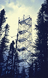
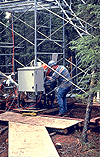

P.I.(s): Raymond L. Desjardins, Elizabeth Pattey -- Agriculture Canada; Ian MacPherson -- National Research Council (NRC)
Co-I.(s): Peter H. Schuepp -- McGill Univ.; K. Nakane, M. Hayashi -- Japan; Gerry St-Amour -- Agriculture Canada
Objectives: To develop techniques for studying the contribution of the boreal ecosystem to the greenhouse gas composition of the atmosphere and how this ecosystem responds to environmental conditions. Tower-based flux measurements of heat, momentum, CH4, CO2, NMHC, N2O, NHMC, and H2O were obtained during intensive field campaigns in 1994 over an Old Black Spruce stand in the Prince Albert area (SSA-OBS). These measurements will be compared with measurements from other research groups in order to evaluate their accuracy and combined with them to model the boreal forest ecosystem. Techniques will be developed to arrive at a spatial and temporal description of energy, water and carbon fluxes on a large scale basis. The Japanese section of this team lead by Prof. Nakane measured CO2 fluxes in the forest canopy by chamber technique. In addition, soil carbon cycle work was done in the SSA-OBS and nearby clear-cuts.
|  The flux tower at SSA-OBS |  The control box at the base of the flux tower |
Objectives:
Surface flux measurements were carried out during the three intensive field campaigns (IFCs) of the BOReal Ecosystem Atmosphere Study (BOREAS) in 1994 at the old black spruce stand in the southern site. The objective was to quantify the energy and carbon exchange for key periods of the growing season. Some of the limitations associated with nighttime CO2 flux measurements by eddy-correlation are also addressed. Another objective was to scale-up aircraft- and tower-based flux measurements to a regional scale.
Types of Data Collected and Equipment Used:
Momentum, CO2, sensible and latent heat fluxes were measured using the eddy-correlation technique (EC), while methane and nitrous oxide fluxes were measured using either the aerodynamic-gradient technique (AG) or EC. The measurements were made at 20 m above the ground (about 12 m above the displacement plane). Incoming solar radiation was measured with a LI-COR pyranometer (LI-200S). Wind velocities and temperature were measured with a sonic anemometer-thermometer (Kaijo-Denki DAT-310). The sonic anemometer and the intake tubes of the closed-path analyzers were located on a boom, approximately 1.65 m long, parallel to the soil surface. The boom was mounted on a rotating table to orient the sensors in the prevalent wind direction, and on a sliding carriage to access both ends of the south side of the tower. CO2 and H2O concentrations were measured in fast-response absolute mode with an infrared gas analyzer (LI-COR 6262) equipped with a 4-m sampling tube. Methane and nitrous oxide gradients between 16 and 24 m above the ground were measured with tunable diode lasers (Campbell Scientific, TGA). The eddy diffusivity coefficient, K, was calculated based on the measurements from a sonic anemometer. Isoprene fluxes were measured by the relaxed eddy-accumulation technique. Isoprene concentrations were analyzed by TGB-10. All the fluxes were calculated on 30-min. basis. Measurements were carried out during the three IFCs between calendar days 144-155 (May-June), 200-210 (July) and 251-260 (September).
Known Problems:
No methane and nitrous oxide data were available for IFC-1 due to a problem with the pumps. Flux measurements for methane and nitrous oxide during IFC-2 and -3 are intermittent because three different measuring techniques were used (AG, EC and REA), and tunable diode lasers are very sensitive to vibrations. No data were collected on CD 148 because of rain. Flux data for day 209 were lost because of lightning. Night eddy CO2 flux data are not representative of CO2 respiration processes when wind speeds are low.
Other Information:
Isoprene flux were recorded on day 205, 207, 208, 251, 252.
TF Overview || TF-1 | TF-2 | TF-3 | TF-4 | TF-5 | TF-6 | TF-7 | TF-8 | TF-9 | TF-10 | TF-11
 Send a data request to the BOREAS Data Manager (BOREAS Investigators only)
Send a data request to the BOREAS Data Manager (BOREAS Investigators only)
E-Mail a comment on this page to the curator 
Send e-mail to Fred Huemmrich, the BORIS representative for the TF group
Return to the TF Overview
Return to the BOREAS Science Groups Overview
Return to the BOREAS Home Page
Last Updated: October 30, 1997
{kind=link}
{kind=link}